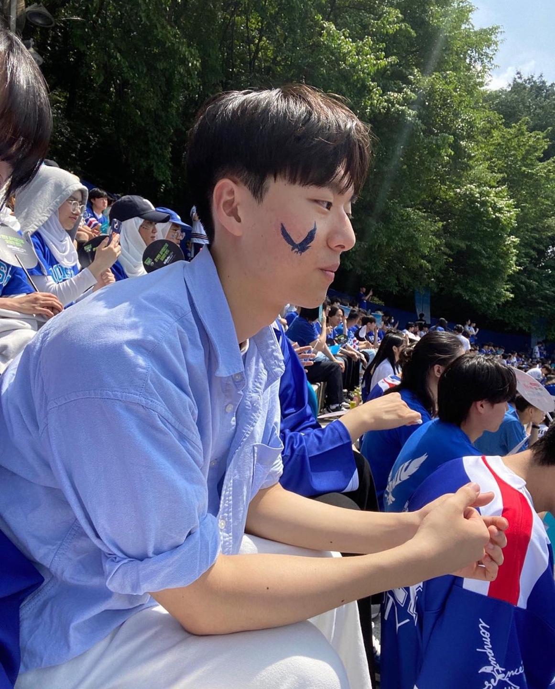
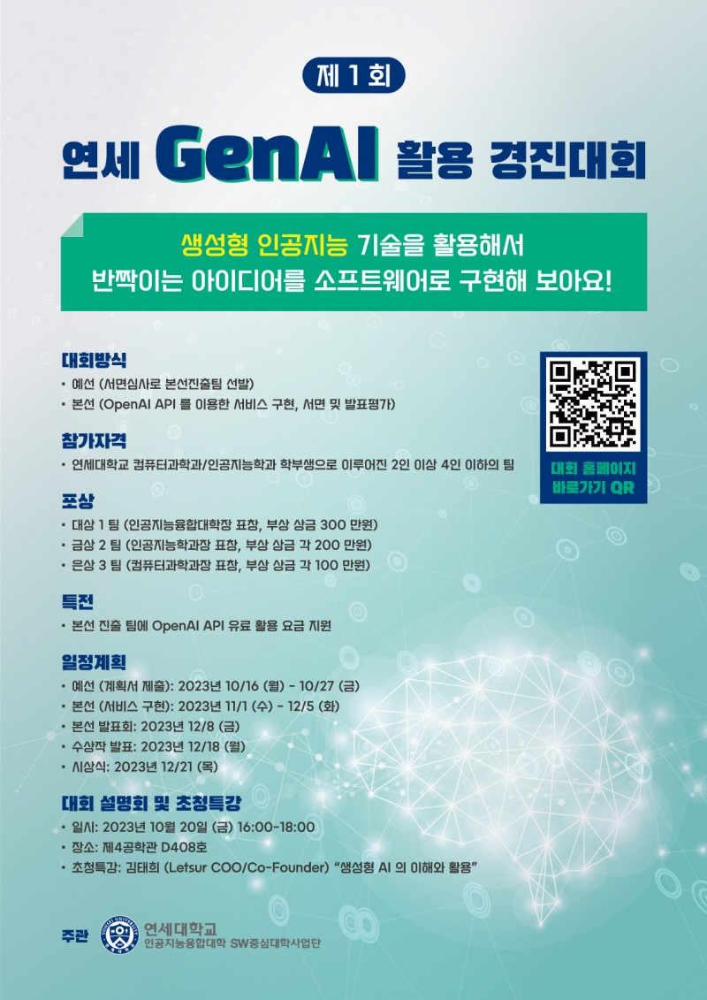
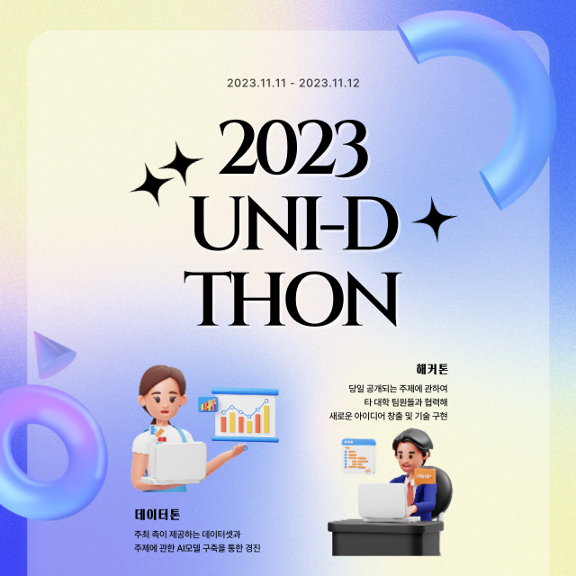
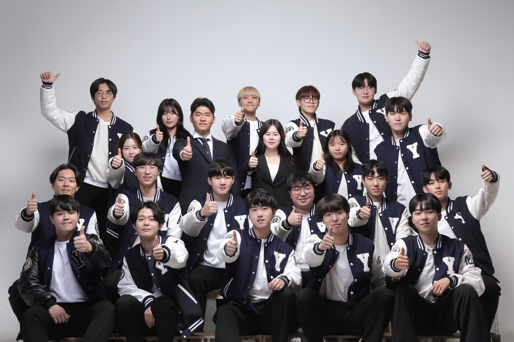
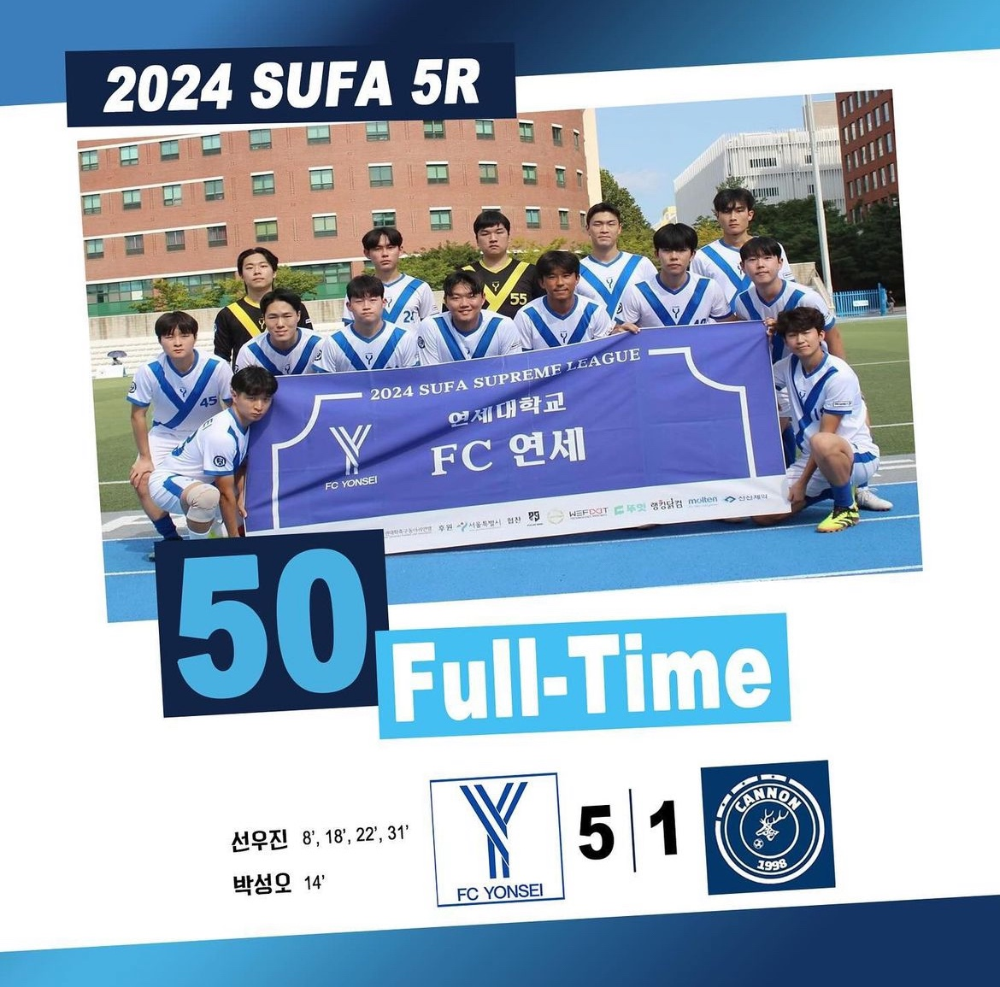

|
KyoungJin Oh I am an undergraduate student majoring in Computer Science and Engineering at Yonsei University. At Google I've worked on Glass, Lens Blur, HDR+, VR, Portrait Mode, Portrait Light, and Maps. I did my PhD at UC Berkeley, where I was advised by Jitendra Malik. I've received the PAMI Young Researcher Award. |
 |
ResearchI haven’t studied deeply in a specific field yet, so my areas of interest are broad. I'm interested in all fields of AI, with a particular focus on Computer Vision and Generative AI. |
Honors & AwardsHigh honors are awarded to the top 3% of students, while honors go to those within the top 10%. |

|
Honors in the 2nd semester of 2023
High Honors in the 1st semester of 2023 Honors in the 1st semester of 2022 |
|  |
The 1st Yonsei GenAI Contest
KyoungJin Oh, JunSeong Lee, KangWon Lee Silver Prize We implemented software using the OpenAI generative AI API.We developed a web-based program that, when given an artwork as input, outputs a lighting suitable for the exhibition and an estimation of how the artwork would appear displayed in the exhibition under that lighting. |
Experience |

|
Startup Jobssul
I worked for 3 months at this startup, where I focused on app development and data analysis. During this time, I developed an app that consolidates information on university entrance exam briefings hosted by various academies, allowing users to easily register for them. Additionally, I analyzed admissions data from all university departments in Korea over the past few years to identify trends. |
|  |
UNID-THON Management
As the vice president of UNID-THON, a competition organized by UNID, which comprises the student councils of various university computer science departments, I was involved in planning most aspects of the event, including themes for the hackathon, data for the datathon, venue selection, and meal organization. |

|
INSIDERS Startup Society
I learned how to generate and develop business ideas in the entrepreneurial space through projects like the 100,000 KRW Challenge and international startup benchmarking, and I also contributed to a project focused on developing a new 3D modeling tool program as an MVP (Minimum Viable Product). |
|
AI hackathons
I participated in various AI hackathons through the AI hackathon platform site, Dacon, including events such as the Solar Power Generation Forecasting AI Competition and the Credit Card User Delinquency Prediction AI Competition. During the process, I used appropriate data preprocessing techniques and applied various neural network models as well as statistical models. |
Blog PostsI am not only an AI developer but also a traveler who has explored 21 countries around the world. On my blog, you'll find not only posts about AI but also stories from my travels. |

{kind=link}
Extracurricular Activities |
|  |
Student Council of the Department
I assumed an administrative role in various events held at the university and served as the student council president. In this position, I worked with a diverse range of individuals and learned how to build strong, effective relationships. |
|  |
FC Yonsei Soccer Club
I joined the FC Yonsei soccer club as soon as I entered university and have been actively involved as part of the team ever since. Competing in events like K7, SUFA, and the Yonsei University President’s Cup alongside my teammates has given me the opportunity to learn valuable lessons about teamwork through numerous matches. |
|
Feel free to steal this website's source code. Do not scrape the HTML from this page itself, as it includes analytics tags that you do not want on your own website — use the github code instead. Also, consider using Leonid Keselman's Jekyll fork of this page. |